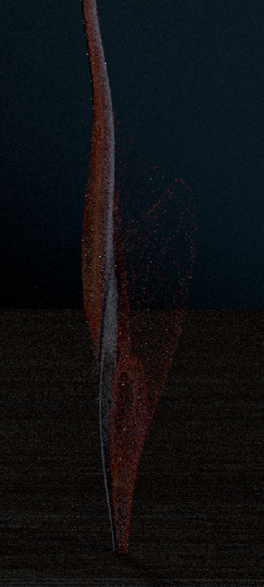
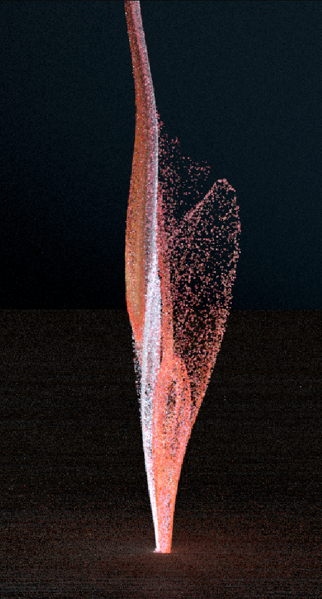
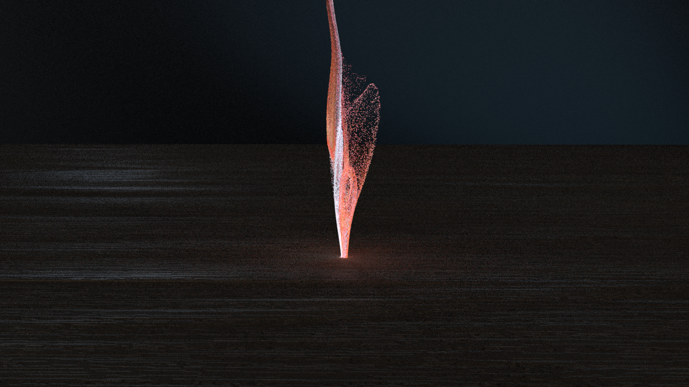
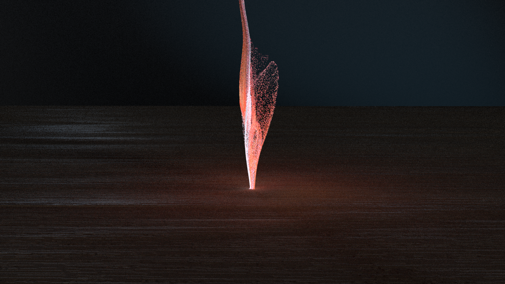

Emissive Mask for Dropping Particles
Use age attribute to control the area and amount of the emissive material

Without Emission

With Emission
Combine Shots 3 and 4; Shot 4 is the hero.
Shot 3: Consider a more macro approach
Shot 3-4: Particle speed is too fast—formation should feel progressive, not explosive.
Shots 3-4: Particles don’t clearly connect to the paint/printed surface
Shots 3-4: Hitting a collider instead of the surface feels unintentional
Shots 3-4: Let particles contribute to lighting.
Shots 3-4: Layer multiple sims (particles, smoke, trails)
Shots 4: Particles feel solid/glittery—aim for liquid, chalky pigment
Shots 4: Too big and too few—use more, smaller particles.
Shots 4: Add motion blur; watch substeps and banding.
Shot 1-2: Change the fluid to particles and refine the look of the particles
Shot 4-5: Refine the motion and look of the particles and set up lights for render
Refined lighting for shot 1-2 and final shot
Custom height/displacement for the painting shot
Refined materials
shot 1-2, 4: Render AOVS
AOV testing
Shot 3: Create emissive mask of the particles
Shot 3-4: Lighting
shot 3: Render AOVS
Shot 1-2: Refine the particle flow and improve its smoothness.
Shot 4-5: Refine the look of particles
Custom height map for objects post-printing
Render AOVs
AOV testing
Render AOVs
Shot 3: Add layer of surrounding particles
Shot 3: Create material for surrounding particles
Shot 5: Add colorful particles floating together with the objects
Shot 5: Add particle from shot 4 at the beginning of the shot so it’ll look continue

Without Emission

With Emission

Without Mesh Light

With Mesh Light